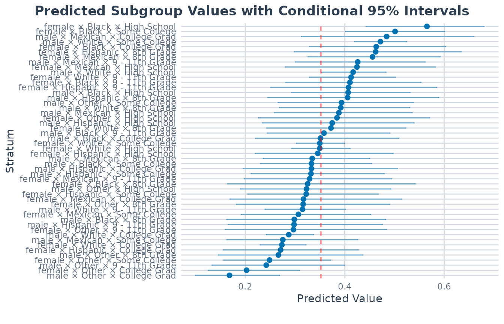
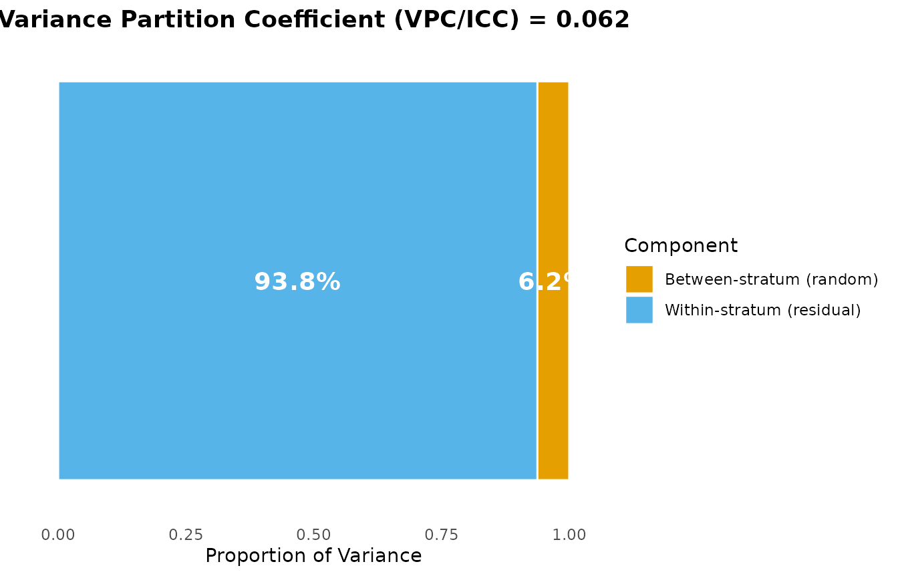
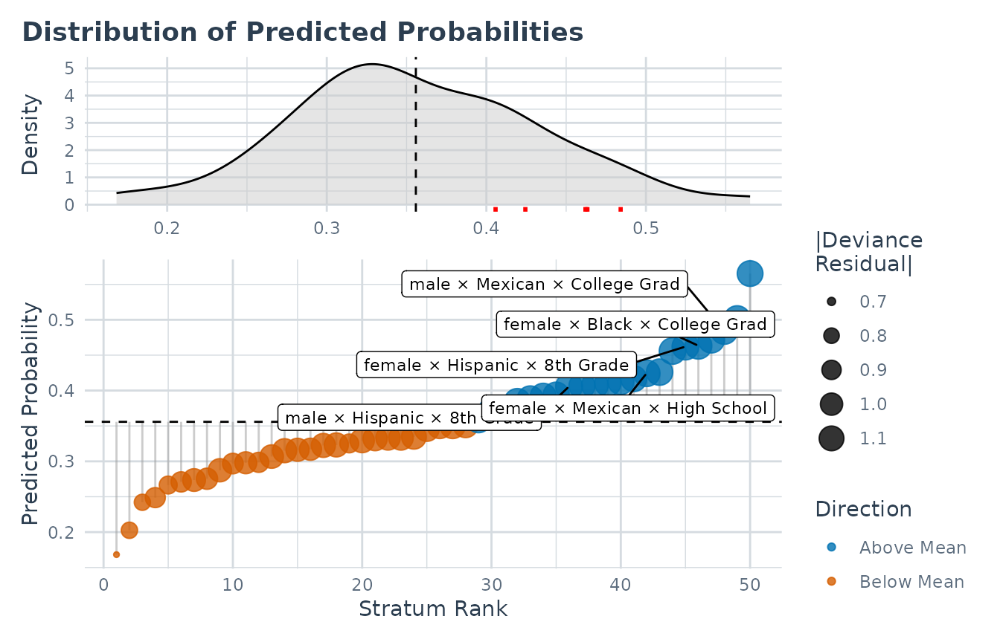

MAIHDA for Binary Outcomes (Discriminatory Accuracy)
Hamid Bulut
2026-08-30
Source:vignettes/binary_outcomes.Rmd
binary_outcomes.RmdWhy binary outcomes?
Many of the original MAIHDA applications target a binary health outcome – obese vs. not, hypertensive vs. not, screened vs. not. Merlo’s framing of discriminatory accuracy is, at heart, a question about a binary classifier: how well do the intersectional strata alone separate people who do and do not have the outcome?
For a binary outcome the model is a multilevel logistic regression:
where indexes the intersectional stratum. MAIHDA reads off two complementary quantities from this model:
- the VPC/ICC, the share of the (latent) variation that lies between strata;
- the discriminatory accuracy (e.g. the AUC / C-statistic), how well stratum membership predicts the individual outcome.
A high between-stratum VPC can still go with only moderate discriminatory accuracy at the individual level – that contrast is the whole point of the “DA” in MAIHDA, and this vignette shows how to get both numbers.
Fitting a logistic MAIHDA model
fit_maihda() detects a two-level outcome automatically.
If you leave family at its default, the function switches
to family = "binomial", recodes the response to 0/1 for
glmer(), and warns you so the change is never silent:
model_null <- fit_maihda(
Obese ~ 1 + (1 | Gender:Race:Education),
data = maihda_health_data
)
#> Warning: The outcome variable appears to be binary. Automatically switching to
#> family = 'binomial'. To fit a Linear Probability Model, explicitly specify
#> family = 'gaussian'.
#> Binary outcome 'Obese' recoded to 0/1: 'No' = 0 (reference), 'Yes' = 1 (modeled event). Set the factor levels (or supply a 0/1 outcome) to control which level is the event.The warning is a feature, not a problem. To be explicit (and to
silence the warning), pass family = "binomial" yourself –
this is the recommended form for scripts:
model_null <- fit_maihda(
Obese ~ 1 + (1 | Gender:Race:Education),
data = maihda_health_data,
family = "binomial"
)If you actually want a linear probability model on a 0/1 outcome, ask for it explicitly with
family = "gaussian"; the auto-switch only fires for the default family.
The VPC is on the latent scale
summary() reports the VPC/ICC for the logistic model.
There is no observed-scale residual variance for a Bernoulli outcome, so
MAIHDA uses the standard latent-scale approximation:
the level-1 (within-stratum) variance is fixed at
for the logit link (and the corresponding constant for a probit link).
The VPC is therefore the between-stratum share of variation on that
underlying latent scale, not on the probability scale.
summary_null <- summary(model_null)
print(summary_null)
#> MAIHDA Model Summary
#> ====================
#>
#> Variance Partition Coefficient (VPC/ICC):
#> Estimate: 0.0634
#>
#> Variance Components:
#> component variance sd proportion
#> Between-stratum (random) 0.2227 0.4719 0.06339
#> Within-stratum (residual) 3.2899 1.8138 0.93661
#> Total 3.5125 1.8742 1.00000
#>
#> Discriminatory accuracy (binomial MAIHDA)
#> AUC (C-statistic): 0.626
#> Median Odds Ratio: 1.568
#> Cases / controls: 1077 / 1923
#> (AUC is apparent / in-sample: scored on the same rows used to fit the
#> model, so it is optimistically biased -- more so with sparse strata. It
#> is a descriptive measure, not cross-validated out-of-sample discrimination.)
#>
#> Fixed Effects (Wald 95% intervals):
#> term estimate se statistic p_value lower upper
#> (Intercept) -0.616 0.09022 -6.828 8.61e-12 -0.7928 -0.4392
#>
#> Stratum Estimates (first 10):
#> stratum stratum_id label random_effect se
#> 1 1 male × Hispanic × Some College -0.075834 0.3155
#> 2 2 male × Black × College Grad -0.001524 0.3325
#> 3 3 female × White × College Grad -0.360949 0.1186
#> 4 4 male × Hispanic × 8th Grade 0.218443 0.3808
#> 5 5 female × Mexican × 8th Grade 0.437816 0.2809
#> 6 6 male × White × College Grad -0.293351 0.1187
#> 7 7 female × White × High School -0.006285 0.1322
#> 8 8 male × White × Some College 0.502977 0.1077
#> 9 9 female × White × 9 - 11th Grade 0.259733 0.1835
#> 10 10 female × Hispanic × High School -0.006773 0.3208
#> lower_95 upper_95
#> -0.6941 0.54246
#> -0.6533 0.65025
#> -0.5935 -0.12843
#> -0.5280 0.96489
#> -0.1127 0.98833
#> -0.5259 -0.06076
#> -0.2654 0.25283
#> 0.2919 0.71405
#> -0.1000 0.61948
#> -0.6355 0.62197
#> ... and 40 more strataRead from this null model, the VPC is the total between-stratum share of latent variation in the odds of obesity. As in the Gaussian case, the stratum random effects capture the combined additive + interaction differences across strata; they isolate the pure intersectional (interaction) component only once the additive main effects of the strata variables are in the model.
For a binomial model
summary()now reports the discriminatory accuracy (AUC / Median Odds Ratio) automatically, so the printed summary above already carries that block – the Discriminatory accuracy section below explains how to read it and how to obtain the pieces on their own.
For an interpretable probability-scale complement to
the latent-scale VPC, the package provides
maihda_vpc_response(), which estimates the response-scale
VPC by simulation (Goldstein, Browne & Rasbash 2002):
maihda_vpc_response(model_null, seed = 1)
#> Response-scale VPC (simulation method)
#> VPC: 0.0478
#> 10000 simulated stratum effects; between-stratum variance 0.2227 (latent scale).
#> Report it alongside – not instead of – the latent-scale VPC: it depends on the overall prevalence, and for adjusted models it is evaluated at the mean covariate profile, so it is best read from the null model.
Adjusted model and PCV
A “Model 2” adds individual-level covariates to ask how much of the
between-stratum variation they account for. Here we adjust for age, fit
on the same analytic sample and strata as the null
model, and compare with calculate_pcv(). PCV compares
variances across models, so both must use the same complete-case
sample:
health_complete <- maihda_health_data[complete.cases(
maihda_health_data[, c("Obese", "Age", "Gender", "Race", "Education")]
), ]
model_null2 <- fit_maihda(
Obese ~ 1 + (1 | Gender:Race:Education),
data = health_complete, family = "binomial"
)
#> Binary outcome 'Obese' recoded to 0/1: 'No' = 0 (reference), 'Yes' = 1 (modeled event). Set the factor levels (or supply a 0/1 outcome) to control which level is the event.
# Model 2: adjust for an individual-level covariate (age)
model_adj <- fit_maihda(
Obese ~ Age + (1 | Gender:Race:Education),
data = health_complete, family = "binomial"
)
#> Binary outcome 'Obese' recoded to 0/1: 'No' = 0 (reference), 'Yes' = 1 (modeled event). Set the factor levels (or supply a 0/1 outcome) to control which level is the event.
pcv <- calculate_pcv(model_null2, model_adj)
print(pcv)
#> Proportional Change in Variance (PCV)
#> =====================================
#>
#> PCV: 0.0167
#>
#> Variance basis: as fitted (REML for Gaussian lmer, matching summary())
#>
#> Between-stratum variance:
#> Model 1: 0.222667
#> Model 2: 0.218941
#> Change: 0.003726 (1.67%)
#>
#> Interpretation (PCV is the proportional change in between-stratum
#> variance between the models):
#> Between-stratum variance is 1.7% lower in Model 2 than in Model 1.The same caveats as in the continuous case apply, with one extra wrinkle: for non-Gaussian models the latent residual variance is fixed by the link, so a change in the between-stratum variance is partly a rescaling of the latent scale, not only “variance explained”. Interpret the PCV as a model-dependent, descriptive change, not a causal decomposition.
A note on adjusting for the strata’s own categories. If instead you add the categorical main effects that define the strata (e.g.
Obese ~ Gender + Race + Education + ...) to recover the additive-vs-interaction split shown in the introduction, be aware that in a logistic model those fixed effects are nearly collinear with the stratum random intercept, soglmer()often reports a convergence or “nearly unidentifiable” note. Scaling covariates and usingcontrol = lme4::glmerControl(optimizer = "bobyqa")usually helps.
What “interaction” means on the logit scale
Once those main effects are in the model, the stratum random
effect is the pure intersectional component, and
maihda_interactions() flags the strata whose component is
credibly non-zero:
model_int <- fit_maihda(
Obese ~ Gender + Race + Education + (1 | Gender:Race:Education),
data = health_complete, family = "binomial"
)
#> Binary outcome 'Obese' recoded to 0/1: 'No' = 0 (reference), 'Yes' = 1 (modeled event). Set the factor levels (or supply a 0/1 outcome) to control which level is the event.
maihda_interactions(model_int)
#> ── Intersectional interactions ─────────────────────────────────────────────────
#> 1 of 50 strata flagged (95% interval; BH-adjusted conservative p-values).
#> Model: adjusted; interaction on the link (latent) scale.
#> A log-odds departure (logit link): the flags test additivity on the link
#> scale, not in risks.
#> prob_diff is that same departure in probability points (pi_j - pi^A_j);
#> scale = "response" returns it with its interval.
#>
#> stratum label n interaction prob_diff se lower
#> 8 male × White × Some College 328 0.3713 0.0896 0.0993 0.1766
#> upper p_value p_adjusted flagged direction
#> 0.5659 0.000185 0.009249 TRUE above
#>
#> Interaction BLUPs are shrunken (partially pooled) estimates; treat flags as
#> exploratory. See ?maihda_interactions.
#> Read the numbers on the scale they were computed on. In the Gaussian
case the stratum BLUP
is the part of the stratum’s mean outcome attributable to interaction,
in the outcome’s own units. Here it is a deviation in
log-odds – so what is flagged is
multiplicative, odds-scale interaction. Evans et al. (2024,
sec. 2.5.1) say it plainly: in a logistic MAIHDA you can “no longer
directly interpret
as the change in mean outcomes (i.e., shift in probabilities)
attributable to interaction effects”. The printed output says so too,
which is why the binomial fit above carries a line the Gaussian one does
not – and why it prints a prob_diff column the Gaussian one
does not: the same departure expressed in probability points, so the
log-odds figure is never the only number on screen. That column is a
display convenience; scale = "response" below is how to get
it, with its interval, as data.
There are in fact three quantities in play here, and this analysis reports two of them. Keeping them apart is the whole of the difficulty.
1. The multiplicative interaction,
– whether a dimension multiplies the odds by the same factor at every
level of the others. That is what was just printed, and what
flagged is about.
2. The same departure in probability points, – the units to report if your reader thinks in risks. More on it in a moment.
3. The additive (risk-difference) interaction – whether a dimension adds the same number of percentage points of risk at every level of the others. Neither 1 nor 2 reports this, and it is generally non-zero even when is exactly zero. Take a model with a baseline and for each of two dimensions and no interaction whatsoever:
p <- function(a, b) plogis(-2 + 0.7 * a + 0.7 * b)
c(`risk added by B, at A = 0` = p(0, 1) - p(0, 0),
`risk added by B, at A = 1` = p(1, 1) - p(1, 0))
#> risk added by B, at A = 0 risk added by B, at A = 1
#> 0.09496209 0.14017868The odds ratio for B is identical at both levels of A – that is what means – yet B adds nine and a half points of risk in one group and fourteen in the other. The excess is a property of the logistic curve, which is steeper in the middle than in the tails, not a finding about the world. So “no strata flagged” supports “no credible multiplicative interaction”, not “no interaction”: quantity 3 is generally non-zero regardless, and it is often the one a policy audience cares about.
Generally, not always – worth knowing, because the exception is a perfectly ordinary design rather than a curiosity. The risk-difference interaction is positive below the curve’s midpoint and negative above it, so it must pass through zero, and it does so where the two comparisons straddle the midpoint symmetrically:
rd_int <- function(b0, a, b) {
(plogis(b0 + a + b) - plogis(b0 + a)) - (plogis(b0 + b) - plogis(b0))
}
vapply(c(`-2.0` = -2, `-0.7` = -0.7, `0.0` = 0), rd_int, numeric(1), a = 0.7, b = 0.7)
#> -2.0 -0.7 0.0
#> 4.521658e-02 5.551115e-17 -3.419166e-02At an intercept of the risks add exactly. That is one configuration out of many, and nothing in the flags tells you which one you are in – which is the point: they are not evidence about quantity 3 in either direction.
Quantity 2, then. Evans et al. (2024) define it as the gap between a stratum’s total predicted probability and the probability implied by the additive main effects alone,
and rank-plot
where the linear case plots
.
Ask for it with scale = "response":
maihda_interactions(model_int, scale = "response")
#> ── Intersectional interactions ─────────────────────────────────────────────────
#> 1 of 50 strata flagged (95% interval; BH-adjusted conservative p-values).
#> Model: adjusted; interaction on the response (outcome) scale.
#> A probability difference (pi_j - pi^A_j, Evans et al. 2024): the
#> interaction carried onto the outcome scale; flags match the
#> log-odds scale.
#>
#> stratum label n interaction lower upper p_value
#> 8 male × White × Some College 328 0.0896 0.04188 0.1381 0.000185
#> p_adjusted flagged direction
#> 0.009249 TRUE above
#>
#> Interaction BLUPs are shrunken (partially pooled) estimates; treat flags as
#> exploratory. See ?maihda_interactions.
#> Same strata, same evidence, readable units: a flagged stratum’s interaction is now a difference in percentage points of predicted probability rather than a log-odds departure.
That correspondence is exact, not approximate. Write
for the map from a stratum’s BLUP to its
;
is strictly increasing and
,
so the estimate, both interval endpoints and zero carry across together.
flagged, direction and the p-values are
identical under either scale, and the response-scale interval is the
exact image of the link-scale one – no simulation, and no delta-method
approximation. It inherits the same conditionality (fixed effects and
variance components held at their point estimates). Two things do
change: se is dropped, because the resulting interval is
deliberately asymmetric about the estimate and no single standard error
would reproduce it; and the ranking can differ, since the same log-odds
departure buys more probability near
than out in the tail.
A rope is then read in the same units, which is often
where the argument becomes concrete – “are more than two percentage
points of this stratum’s risk attributable to its interaction?” is a
question a reader can actually answer:
table(maihda_interactions(model_int, scale = "response", rope = 0.02)$decision)
#>
#> inconclusive relevant
#> 49 1If it is quantity 3 you want, neither scale will
give it to you – scale = "response" re-expresses the
multiplicative interaction, it does not replace it with the
risk-difference one. Fit a linear probability model instead:
family = "gaussian" on the 0/1 outcome, the option
fit_maihda() points at when it auto-detects a binary
outcome. There the BLUP is the risk-difference interaction by
construction, at the usual costs (predictions outside
,
heteroskedastic residuals).
Discriminatory accuracy (AUC and Median Odds Ratio)
The VPC summarises variation; discriminatory accuracy
summarises prediction. For a binomial model this is reported
automatically: summary() of a binomial
maihda_model carries a discriminatory_accuracy
slot, and maihda(..., family = "binomial") surfaces it on
its summaries and headline print(). The explicit
maihda_discriminatory_accuracy() below is the same quantity
on its own – it bundles the two individual-level summaries for a
logistic MAIHDA model: the AUC / C-statistic (how well
the predicted probabilities separate cases from non-cases) and the
Median Odds Ratio (MOR) (the between-stratum
heterogeneity expressed on the odds-ratio scale). The strata-only
model’s AUC is the discriminatory accuracy of the intersectional strata
themselves – Merlo’s central quantity. Comparing it with the
adjusted model shows whether individual information beyond stratum
membership sharpens classification:
da_null <- maihda_discriminatory_accuracy(model_null2)
da_adj <- maihda_discriminatory_accuracy(model_adj)
da_null
#> Discriminatory accuracy (binomial MAIHDA)
#> AUC (C-statistic): 0.626
#> Median Odds Ratio: 1.568
#> Cases / controls: 1077 / 1923
#> (AUC is apparent / in-sample: scored on the same rows used to fit the
#> model, so it is optimistically biased -- more so with sparse strata. It
#> is a descriptive measure, not cross-validated out-of-sample discrimination.)
#>
da_adj
#> Discriminatory accuracy (binomial MAIHDA)
#> AUC (C-statistic): 0.628
#> Median Odds Ratio: 1.563
#> Cases / controls: 1077 / 1923
#> (AUC is apparent / in-sample: scored on the same rows used to fit the
#> model, so it is optimistically biased -- more so with sparse strata. It
#> is a descriptive measure, not cross-validated out-of-sample discrimination.)
#> You can also call the pieces directly:
maihda_auc(prob, y) on any vector of predicted
probabilities and 0/1 outcomes (it equals the Mann-Whitney U statistic,
so it needs no extra package), and maihda_mor(model) for
the Median Odds Ratio.
prob_null <- predict_maihda(model_null2, type = "individual", scale = "response")
y_obs <- as.numeric(lme4::getME(model_null2$model, "y"))
maihda_auc(prob_null, y_obs)
#> [1] 0.6261898An AUC of 0.5 is chance. Here both models sit around 0.6: even a
non-trivial between-stratum VPC translates into only
modest accuracy at the individual level –
exactly the cautionary message that motivates discriminatory-accuracy
reporting in MAIHDA. Note the adjusted model barely moves the AUC: the
categorical covariates that define the strata are already
captured by stratum membership, so only the continuous covariate
(Age) adds genuinely new individual-level information.
The MOR needs the logit link. The Median Odds Ratio is an odds-ratio-scale quantity, so it is defined only for
binomial(link = "logit")(the default). For abinomial(link = "probit")fit,maihda_mor()errors andmaihda_discriminatory_accuracy()reports the AUC withmor = NA– the AUC, being rank-based, is link-agnostic.
Plots adapt to the binomial family
The standard plots recognise the binomial family and switch to the probability scale and to deviance-based diagnostics automatically:
# Predicted probabilities per stratum with intervals
plot(model_adj, type = "predicted")
# Latent-scale variance partition
plot(model_adj, type = "vpc")
# For binomial fits the dashboard highlights the largest absolute
# deviance residuals rather than raw deviations from the mean.
plot(model_adj, type = "prediction_deviation")
See the plot interpretation vignette for how to read each of these.
Count outcomes work the same way
A Poisson (count) outcome follows the identical pattern – pass
family = "poisson" to fit_maihda(). The VPC
then uses the log-link latent-scale residual variance, and the summary,
PCV, and plotting helpers all behave as above.
References
Merlo, J. (2018). Multilevel analysis of individual heterogeneity and discriminatory accuracy (MAIHDA) within an intersectional framework. Social Science & Medicine, 203, 74-80.
Evans, C. R., Williams, D. R., Onnela, J. P., & Subramanian, S. V. (2018). A multilevel approach to modeling health inequalities at the intersection of multiple social identities. Social Science & Medicine, 203, 64-73.
Evans, C. R., Leckie, G., Subramanian, S. V., Bell, A., & Merlo, J. (2024). A tutorial for conducting intersectional multilevel analysis of individual heterogeneity and discriminatory accuracy (MAIHDA). SSM - Population Health, 26, 101664. doi:10.1016/j.ssmph.2024.101664
Merlo, J., Wagner, P., Ghith, N., & Leckie, G. (2016). An original stepwise multilevel logistic regression analysis of discriminatory accuracy: the case of neighbourhoods and health. PLOS ONE, 11(4), e0153778.